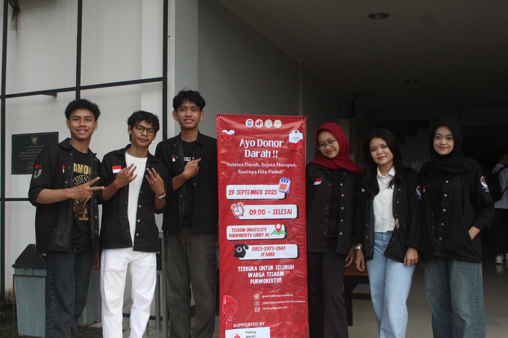

Donor Darah
Tujuan: Menyediakan stok darah yang aman & membentuk kepedulian donor dari civitas.
Deskripsi: Donor Darah rutin yang bekerja sama dengan PMI. Kegiatan ini melibatkan proses pendaftaran, pemeriksaan kesehatan dasar, dan pelaksanaan donor di lokasi kampus atau tempat kerja sama.
Ketua Pelaksana: Chilya Fadhilatin Nisa
